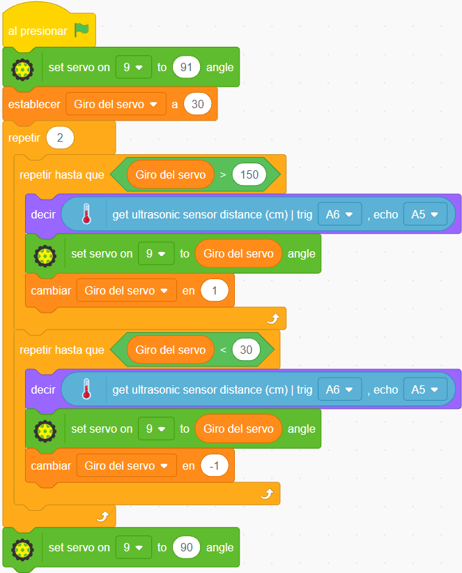

Sensor de ultrasonido + Giro del servo
1°
Control del servo y sensor de distancia
El proyecto del Radar ultrasónico consiste en combinar el giro del servo con la medición de distancia del sensor de ultrasonido.
2°
Bloques de programa
Son los mismos bloques de programa que se usaron para activar el giro del servo desde los 30° a los 150°, a los cuales se agregó el bloque decir get ultrasonic sensor distance (cm) trig A6, echo A5, el cual hace que Tobi diga en cada ciclo repetir hasta que <...> la distancia en cm que se obtiene del sensor ultrasónico, conectado en A6 y A5 de nuestro Arduino Nano.

3°
Creación de variables
Para la creación de la variable Giro del servo y luego su utilización en la condición lógica del bloque repetir hasta que <...> , se puede proceder de la siguiente manera: